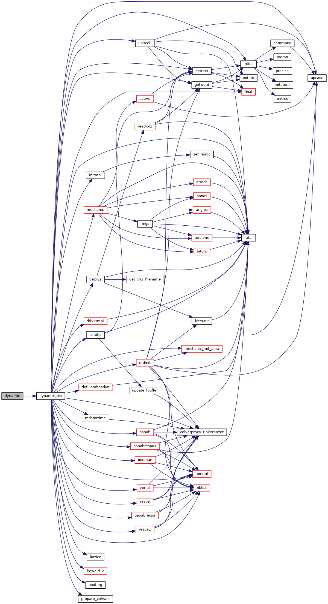
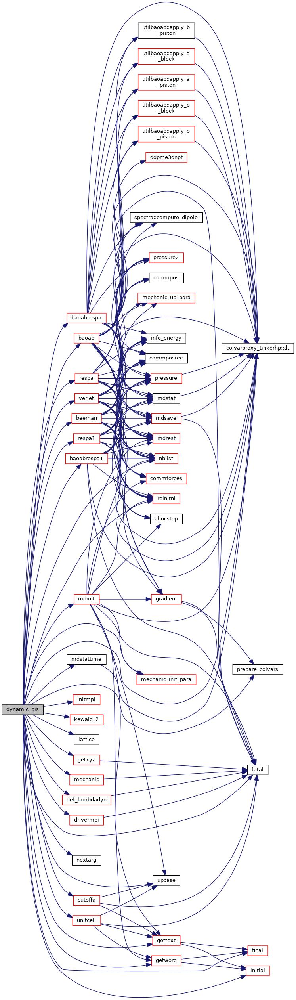
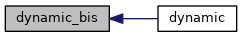

|
Tinker-HP v1.3
|
|
Tinker-HP v1.3
|
Go to the source code of this file.
Functions/Subroutines | |
| program | dynamic |
| computes a molecular dynamics trajectory More... | |
| subroutine | dynamic_bis |
| computes a molecular dynamics trajectory More... | |
| program dynamic | ( | ) |
computes a molecular dynamics trajectory
| no | params |
Definition at line 21 of file dynamic.f90.
References dynamic_bis().

| subroutine dynamic_bis | ( | ) |
computes a molecular dynamics trajectory
| no | params |
Definition at line 34 of file dynamic.f90.
References baoab(), baoabrespa(), baoabrespa1(), beeman(), cutoffs(), def_lambdadyn(), drivermpi(), colvarproxy_tinkerhp::dt(), fatal(), final(), gettext(), getword(), getxyz(), initial(), initmpi(), kewald_2(), lattice(), mdinit(), mdstattime(), mechanic(), mechanic_init_para(), nblist(), nextarg(), prepare_colvars(), reinitnl(), respa(), respa1(), unitcell(), upcase(), and verlet().
Referenced by dynamic().


 1.8.5
1.8.5